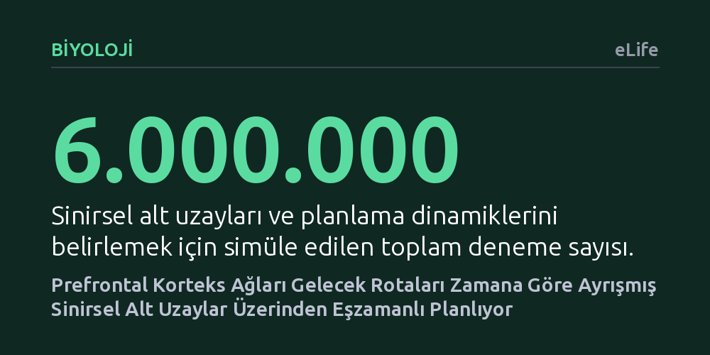

BIYOLOJI · eLife · 2026-10-22
Araştırmacılar, beynin ön bölgesinin gelecekteki çok adımlı rotaları sinirsel devreler düzeyinde nasıl planladığını inceledi. Yinelenen sinir ağlarının her gelecek adımı ayrı alt uzaylarda temsil ederek ortamın komşuluk haritası üzerinden en uygun rotayı eşzamanlı hesapladığı bulundu.
Planlamanın adım adım arama yapan yavaş bir süreç olmadığını, beynin sinirsel dinamikleri sayesinde tüm geleceği paralel ve dinamik bir harita üzerinde bir anda hesaplayabildiğini gösterir.

Günlük hayatta bir binada odadan odaya geçerken, trafikte alternatif bir güzergâh seçerken veya satranç tahtasında birkaç hamle sonrasını düşünürken geleceğe dair planlar yaparız. Bize son derece doğal ve zahmetsiz gelen bu süreç, aslında beynimizin karar merkezi olan prefrontal kortekste olağanüstü karmaşık bir sinirsel hesaplama gerektirir. Canlılar yalnızca anlık dürtülerle hareket etmez; hedefe ulaşmak için gelecekteki olası engelleri ve ödülleri zihninde tartıp bir rota belirlemek zorundadır.
Sinirbilimciler uzun süredir bu planlamanın biyolojik sinir devrelerinde nasıl gerçekleştiğini anlamaya çalışıyor. Geleneksel bilgisayar algoritmaları, olası tüm hamleleri bir karar ağacı gibi tek tek tarayarak en uygun yolu bulur. Oysa beynin biyolojik yapısı bu tür yavaş, ardışık ve işlemci tüketen bir arama sürecine uygun değildir. Beyindeki milyonlarca nöronun, gelecekteki olasılıkları aynı anda nasıl temsil ettiği ve hedefe giden en kârlı rotayı saniyeler içinde nasıl çıkardığı temel bir bilmece olarak kalmıştır.
Araştırmacılar, bu soruyu aydınlatmak amacıyla canlı hayvan deneyleri yerine biyolojik devrelerin çalışma ilkelerini yansıtan matematiksel dinamik sistemler ve yinelenen yapay sinir ağları (RNN) kullandı. Çalışmada 16 kareden oluşan (4x4) ve içerisinde geçişi engelleyen duvarların yer aldığı labirent ortamları modellendi. Yapay ajanlara hem ortamın duvar yerleşimi hem de gelecekteki olası ödüllerin konum bilgisi sağlandı.
Modeller; hedefin sabit kaldığı, hedefin rastgele hareket ettiği ve ödüllerin her karede sürekli değiştiği üç farklı zorlu senaryoda sınandı. Araştırma ekibi, sonuçların rastlantısal olmadığından emin olmak için farklı başlangıç tohumlarıyla beş ayrı sinir ağı eğitti ve toplam 6 milyon deneme simüle etti. Nöronların zaman içindeki ateşleme desenleri gelişmiş lojistik regresyon ve boyut indirgeme yöntemleriyle çözümlenerek kuramsal dinamik sistem modelleriyle karşılaştırıldı.
Simülasyon sonuçları, yapay sinir ağının planlama yaparken son derece düzenli ve geometrik bir yapı geliştirdiğini gösterdi. Ağ, geleceğe yönelik adımları birbirine karıştırmak yerine, her bir gelecek zaman dilimini (birinci adım, ikinci adım, üçüncü adım gibi) kendi içinde neredeyse dik ve bağımsız sinirsel alt uzaylara ayırdı. Bu yapı, gelecekteki rotanın aşamalarının adeta bir taşıyıcı bant gibi farklı sinirsel bölmelerde eşzamanlı olarak işlenmesini sağladı.
En çarpıcı bulgu ise bu alt uzaylar arasındaki döngüsel sinir bağlantılarının, ortamın fiziksel komşuluk matrisini doğrudan kopyalamış olmasıydı. Yani nöronlar arası sinaptik ağırlıklar, labirentte hangi karelerin birbirine bağlı olduğunu yansıtıyordu ve sinirsel sinyaller bu bağlantılar üzerinden ileri-geri akarak en yüksek ödüllü yolu buluyordu. Hatta araştırmacılar ağın belirli bir gelecekteki temsilini yapay uyarım vererek saptırdığında bile, ağ dinamikleri hızla kendini toparlayıp yeni duruma uygun alternatif bir rotaya kendiliğinden kilitlendi.
Elde edilen sonuçlar, prefrontal korteksteki planlama sürecinin yavaş ve adım adım ilerleyen bir arama motoru gibi değil; çevre haritasını hafızasında tutan ve tüm zaman adımlarını paralel işleten dinamik bir çekici sistemi gibi çalıştığını ortaya koyuyor. Beyin, geçmiş deneyimlerle öğrendiği mekân bağlantılarını sinirsel bağlantılara gömerek, olası alternatifleri tek bir hamlede tartıp en uygun eylemi başlatabiliyor.
Yine de bu çalışmanın önemli sınırları bulunmaktadır. Bulgular canlı bir hayvan veya insan beynindeki biyolojik kayıtlardan değil, bütünüyle bilgisayar ortamında eğitilen yapay sinir ağlarından türetilmiştir. Ayrıca test edilen labirentler yalnızca 16 durumlu son derece küçük ve yapay ortamlardır. Gerçek dünyanın belirsizliklerle, sayısız değişkenle ve devasa ölçeklerle dolu karmaşık yapısında beynin aynı alt uzay mekanizmasını ne ölçüde kullandığı gelecekteki deneysel sinirbilim çalışmalarının konusu olacaktır.